LAB NEWS
Ideas in motionLab news
Research, student accomplishments and updates from the RISE community.
FROM THE LAB
News and stories
Explore selected updates from the laboratory archive and Michigan State University.
2026

Position opened · Team
RISE team opened recruitment for postdoctoral scholars
RISE opened recruitment for full-time postdoctoral research in sustainable infrastructure materials.
Read story →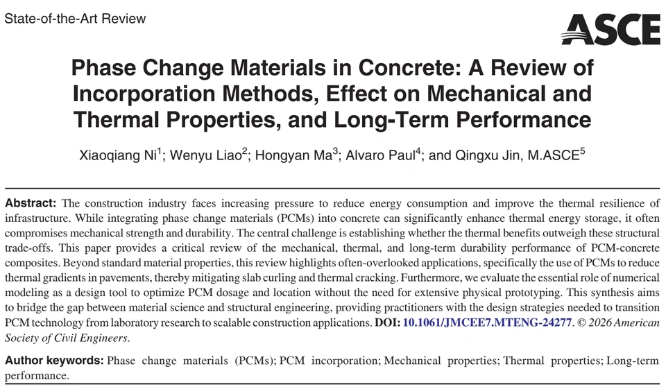
· Research · Publication
A new review guides the design of heat-storing concrete
A new review led by Dr. Xiaoqiang Ni brings together research on how phase change materials affect concrete’s heat storage, strength and durability.
Read story →
· Team
Yinjian “Klay” Li earned Ph.D. candidacy at MSU
Passing his comprehensive exam in October marked a major milestone in Klay’s doctoral work with the RISE Materials Lab.
Read story →
· Team
RISE team celebrated alumni’s new roles and graduate studies
RISE alumni started engineering and consulting roles and advanced their graduate studies in 2026.
Read story →
· Team
Welcome to RISE, Lauren Abernathy!
Lauren, a first-year Honors College student, joined the lab at the start of MSU’s fall semester.
Read story →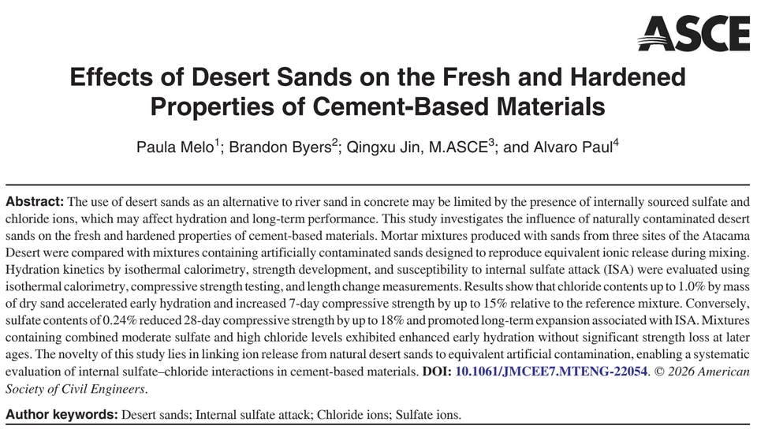
· Research · Publication
Salts in desert sand shaped mortar strength
The study found that naturally occurring chlorides and sulfates affected hydration, strength and expansion in cement mixtures.
Read story →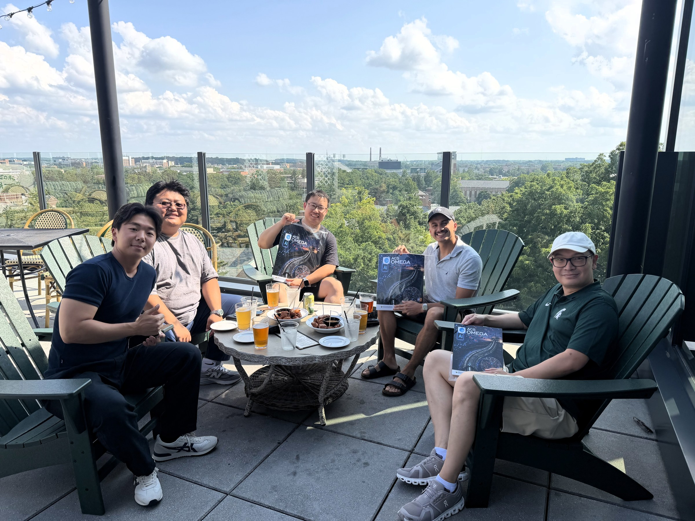
· Team
A summer gathering and a warm welcome at RISE
RISE welcomed new postdoctoral scholar Dr. Peizhi Wang at a rooftop summer celebration in East Lansing.
Read story →
· Research · Publication
ACS Omega featured RISE’s AI-designed well cement on its front cover
ACS Omega featured the team’s fiber-reinforced well cement on its July cover. In lab tests, the material reached a tensile strain above 6%.
Read story →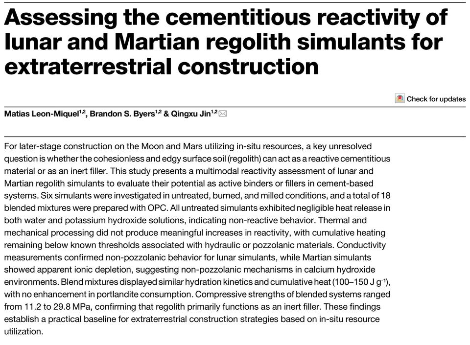
· Research · Publication
Lunar and Martian soil simulants show promise in cement blends
Six lunar and Martian soil simulants served mainly as fillers in Portland cement blends, providing a baseline for future construction research. Grinding and heating produced little change in their reactivity.
Read story →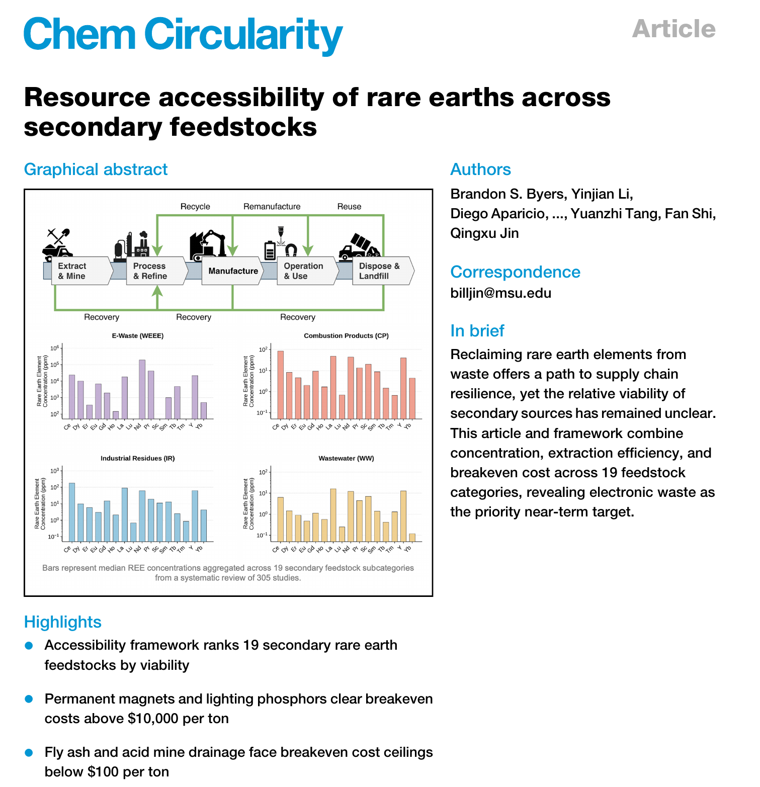
· Research · Publication
Electronic waste stands out for rare earth recovery
A study led by Dr. Brandon Byers compared the potential for recovering rare earth elements from electronic waste, fly ash and other secondary sources.
Read story →
· Research · Team
Matias Leon-Miquel defended his dissertation on space construction materials
Matias Leon-Miquel defended his research on ductile concrete made with simulated lunar and Martian soils.
Read story →
· Team · Award
Dr. Qingxu “Bill” Jin received an ARPA-E IGNIITE award
Dr. Jin received his IGNIITE award in Washington, D.C., and demonstrated ultra-flexible concrete for extreme environments.
Read story →
· Team
Welcome to RISE, Minseok Nam!
Minseok joined RISE as a doctoral student with plans to study multifunctional cement-based materials, waste reuse and materials characterization.
Read story →
· Team
RISE team celebrated doctoral hooding at MSU
Dr. Qingxu “Bill” Jin hooded Xiaoqiang Ni and Matias Leon-Miquel at MSU’s spring doctoral ceremony.
Read story →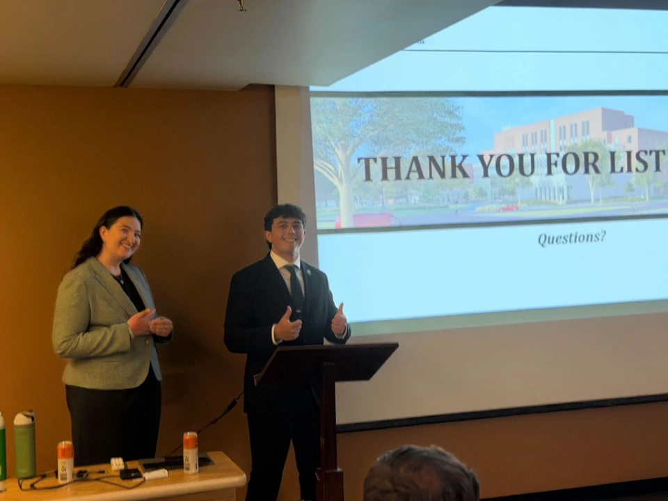
· Team
Nathan Denning and Kelly Couvreur showcase their capstone at MSU Design Day
Undergraduate researchers Nathan Denning and Kelly Couvreur presented their capstone project at MSU Engineering’s spring Design Day.
Read story →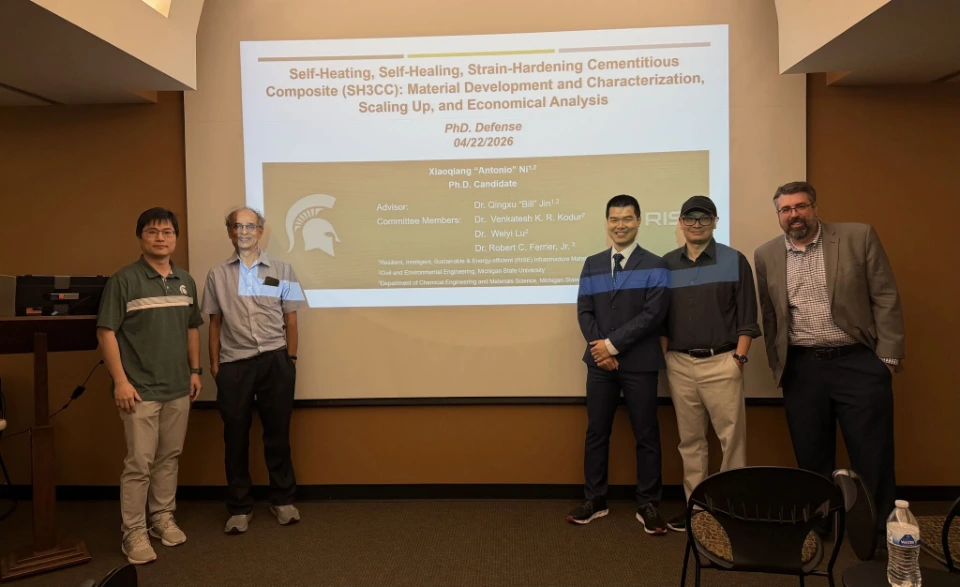
· Research · Team
Xiaoqiang Ni defended his dissertation on self-healing concrete
Xiaoqiang Ni defended his dissertation on self-heating, self-healing ductile concrete for cold regions.
Read story →
· Team · Award
Matias Leon-Miquel earned MSU’s Outstanding CEE Graduate Student Instructor Award
MSU’s Civil and Environmental Engineering department recognized Matias Leon-Miquel for his work as a teaching assistant.
Read story →
· Team · Award
Dr. Qingxu “Bill” Jin was selected for ARPA-E’s IGNIITE program
ARPA-E selected Dr. Jin for the IGNIITE 2025 cohort to develop ultra-flexible concrete for critical energy infrastructure.
Read story →2025
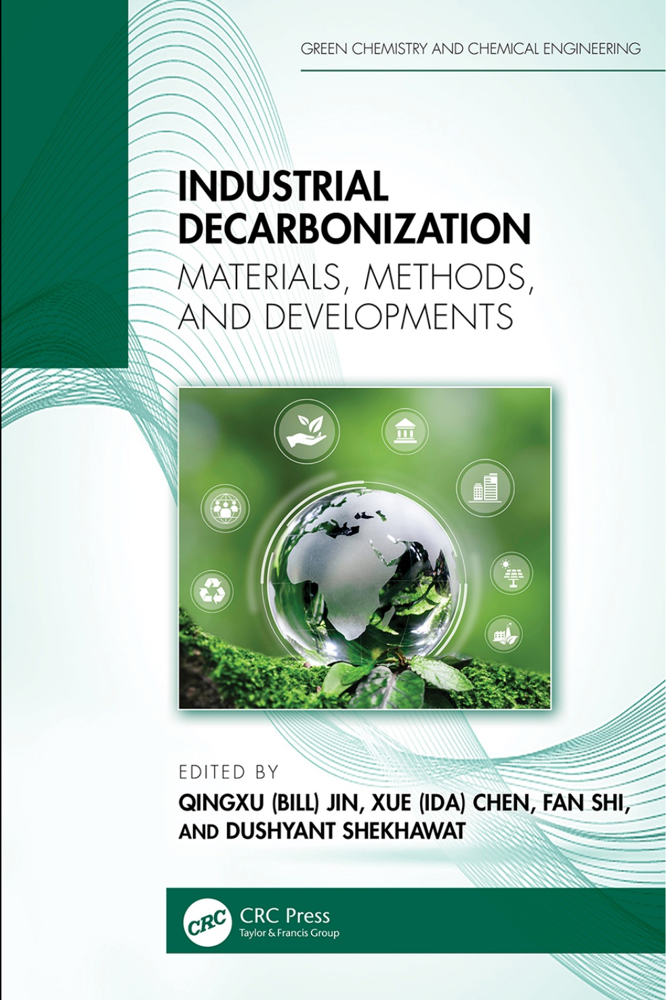
· Publication
Introducing our new book, Industrial Decarbonization
The new CRC Press book brings together research and case studies on cutting emissions in cement, steel and chemical production.
Read story →
· Media · Outreach
MSUToday covered the RISE team’s bendable concrete demonstration
MSUToday reported on the campus demonstration that marked the start of winter field testing for four experimental concrete mixtures.
Read story →
· Research
RISE team installed bendable concrete for campus testing
The team installed four experimental slabs at MSU to compare how different bendable concrete mixtures performed in winter.
Read story →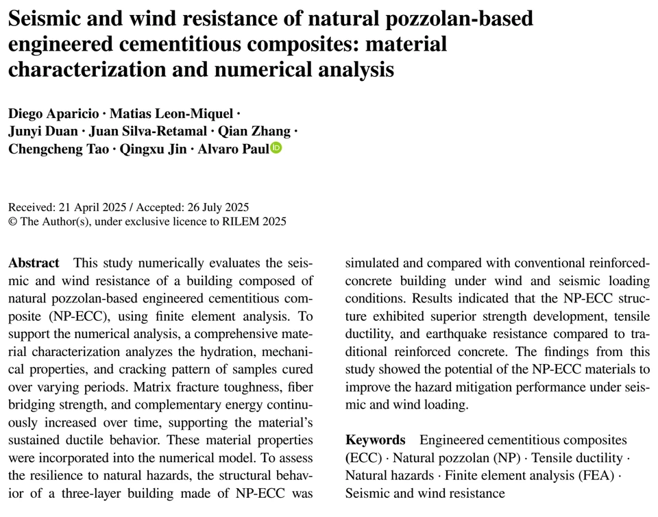
· Research · Publication
Bendable concrete could help buildings withstand earthquakes and wind
Researchers tested concrete made with natural pozzolan and modeled how a building using it responded to earthquake and wind loads.
Read story →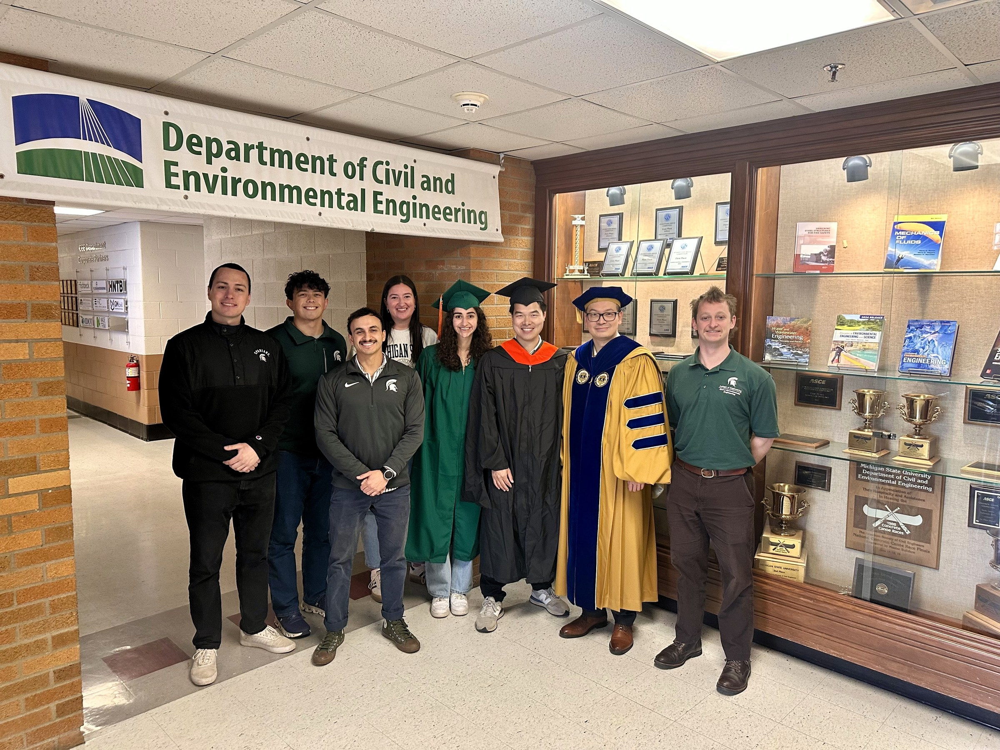
· Team
RISE team welcomed new members and celebrated graduating students
RISE celebrated Xiaoqiang Ni’s M.S. and Madelyn Grant’s upcoming graduation. The lab also welcomed Brandon Byers and Kelly Couvreur.
Read story →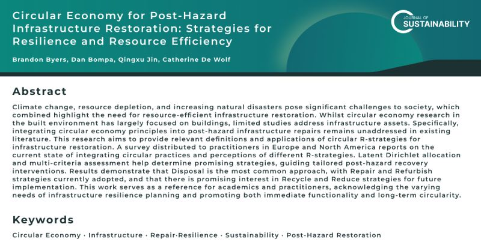
· Research · Publication
Survey highlights repair and refurbishment in post-disaster recovery
A survey found that practitioners already used repair and refurbishment after disasters and were interested in recycling and using fewer resources in future recovery work.
Read story →
· Team · Award
Madelyn Grant earned MSU’s Undergraduate Student Service Award
MSU’s College of Engineering recognized undergraduate researcher Madelyn Grant with its 2024–2025 Undergraduate Student Service Award.
Read story →2024

· Team · Media
Nathan Denning shared his research experience in MSU Today
Denning described how undergraduate research at RISE prepared him for a U.S. Department of Energy fellowship.
Read story →
· Outreach
Connecting with Michigan communities on the Spartan Bus Tour
Dr. Jin traveled with MSU faculty and leaders to learn how university partnerships served Michigan communities.
Read story →
· Research · Media
MSUToday highlights RISE’s self-heating, self-healing concrete
The report explored how bendable concrete could release stored heat in cold weather and heal fine cracks.
Read story →
· Team · Award
Nathan Denning presented critical mineral research at a DOE forum
The Mickey Leland Energy Fellow studied how to recover rare earth elements at the National Energy Technology Laboratory in Pittsburgh.
Read story →
· Team
MSU spotlights Matias Leon-Miquel’s doctoral research
MSU highlighted Leon-Miquel’s doctoral work developing lower-carbon cementitious composites for extreme environments.
Read story →2023

· Research
RISE at ACerS’s Advances in Cement-Based Materials Conference
RISE researchers and collaborators shared studies on lower-carbon composites and cementitious materials made with lunar and Martian soil simulants.
Read story →
· Team · Award
Xiaoqiang “Antonio” Ni won a Best Poster award at MSU
Ni earned the award at the 2023 Engineering Graduate Research Symposium for work on phase change materials in concrete.
Read story →2022
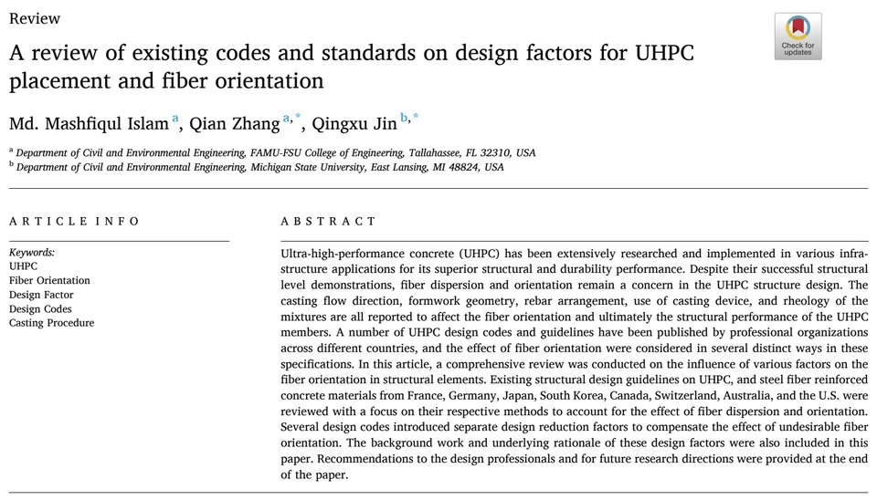
· Research · Publication
How eight countries accounted for fiber direction in UHPC
The review compared how design guidance from eight countries accounted for fiber direction in ultra-high-performance concrete.
Read story →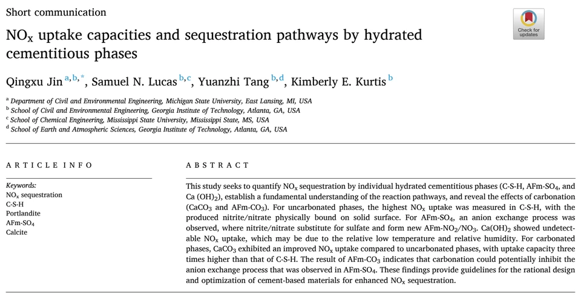
· Research · Publication
Cement tests revealed how carbonation shaped nitrogen oxide capture
In the reported tests, calcium carbonate took up about three times as much nitrogen oxide as calcium silicate hydrate.
Read story →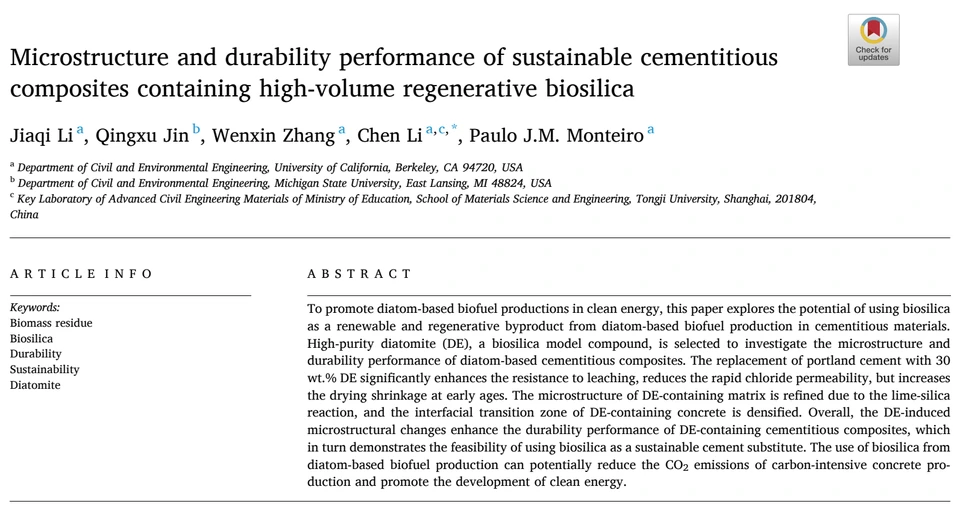
· Research · Publication
Diatomite helped cement blends resist leaching and chloride penetration
The study found that replacing part of the cement with a model for algae-derived biosilica improved resistance to leaching and chloride penetration.
Read story →2021
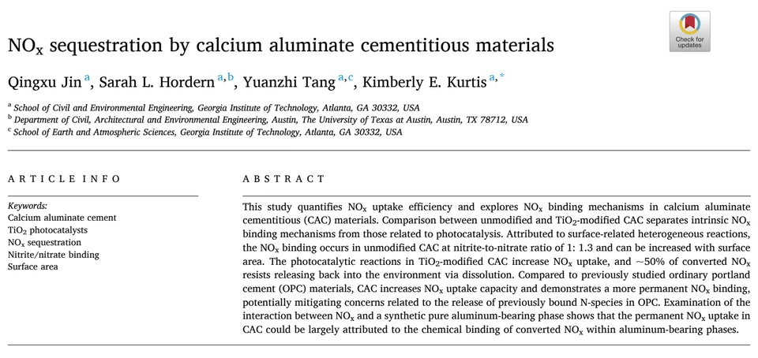
· Research · Publication
Calcium aluminate cement held on to captured nitrogen oxides
In dissolution tests, titanium dioxide-modified calcium aluminate cement retained about half of the nitrogen compounds formed during photocatalysis.
Read story →Before 2021
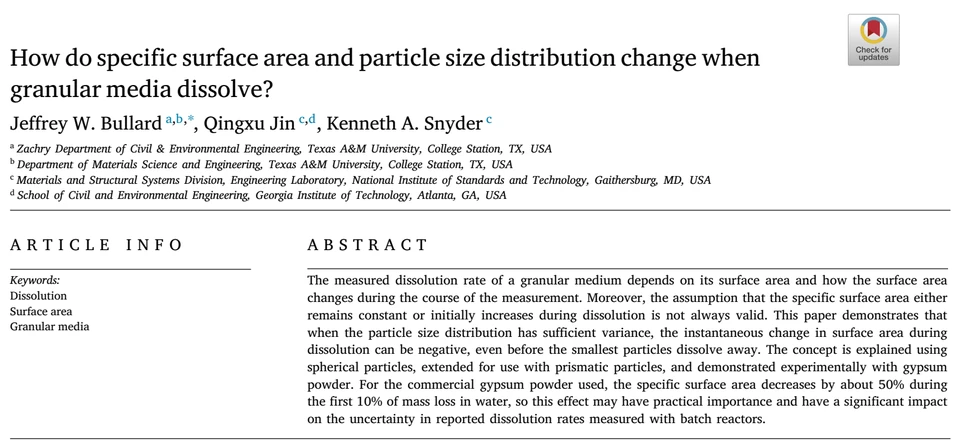
· Research · Publication
How particle size shaped specific surface area during dissolution
The study showed how a mixture of particle sizes can cause surface area per unit mass to decrease before the smallest particles dissolve completely.
Read story →
· Research · Outreach
Dr. Qingxu “Bill” Jin explained bendable concrete at Virtual Science Tavern
In a public talk hosted by Science for Georgia, Dr. Jin explained how bendable concrete controlled cracking and where it could be used.
Read story →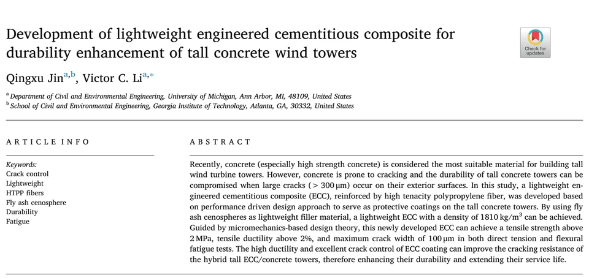
· Research · Publication
A lightweight bendable concrete showed promise for wind towers
The team developed a lightweight composite that limited crack widths in tests and could help protect tall concrete wind towers.
Read story →